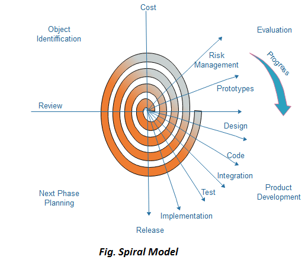

Spiraalmudel, mille algatas alguses Boehm, on evolutsiooniline tarkvaraprotsessi mudel, mis ühendab prototüübi iteratiivse funktsiooni lineaarse järjestikuse mudeli kontrollitud ja süstemaatiliste aspektidega. See rakendab uute tarkvaraversioonide kiire arengu potentsiaali. Spiraalmudeli abil arendatakse tarkvara järjestikuste täiustustena. Algsetel iteratsioonidel võib lisaväljalase olla pabermudel või prototüüp. Hilisematel iteratsioonidel toodetakse üha täielikumaid versioone insenerisüsteemist.
Spiraalmudelit kujutatakse joonisel:
Iga tsükkel spiraalis jaguneb neljaks osaks:
Riskihindamine ja riski vähendamine: Järgmine faas tsüklis on erinevate alternatiivide arvutamine eesmärkide ja piirangute alusel. Selle etapi hindamise keskmes on riskide taju projekti jaoks.
Arendamine ja valideerimine: Järgmine faas on strateegiate väljatöötamine ebakindluse ja riskide lahendamiseks. See protsess võib hõlmata tegevusi nagu võrdlusanalüüs, simulatsioon ja prototüüpimine.
Planeerimine: Viimaks on järgmine samm planeerimine. Projekt läbib ülevaatuse ja tehakse valik, kas jätkata spiraali järgmise perioodiga. Kui otsustatakse jätkata, koostatakse plaanid järgmise etapi jaoks.
Arengufaas sõltub allesjäänud riskidest. Näiteks, kui jõudluse või kasutajaliidese riskid on olulisemad kui programmi arendamise riskid, võib järgmine faas olla evolutsiooniline arendamine, mis hõlmab detailsema prototüübi loomist riskide lahendamiseks.
Spiraalmudeli riskipõhine omadus võimaldab tal kohaneda igasuguse seguga spetsifikatsioonipõhisest, prototüüpimisele orienteeritud, simulatsioonile orienteeritud või mõne muu tüüpi lähenemisviisist. Mudeli oluline element on see, et iga spiraali periood lõpetatakse ülevaatusega, mis hõlmab kõiki selle tsükli jooksul välja töötatud tooteid, sealhulgas plaane järgmise tsükli jaoks. Spiraalmudel sobib nii arendus- kui ka täiendusprojektide jaoks.
Eelised
Puudused